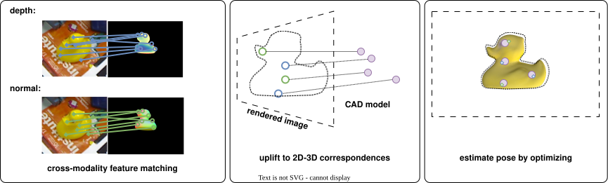
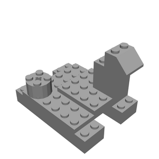
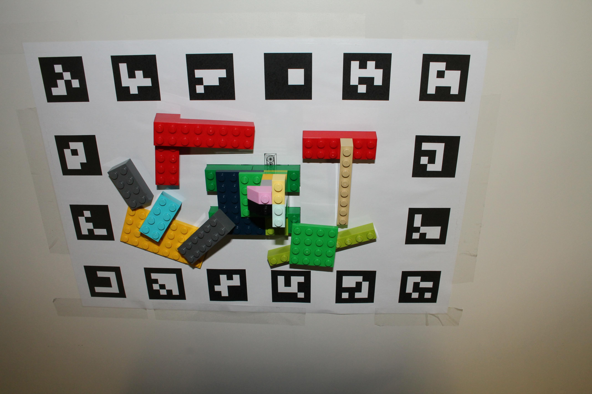
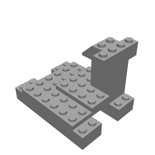
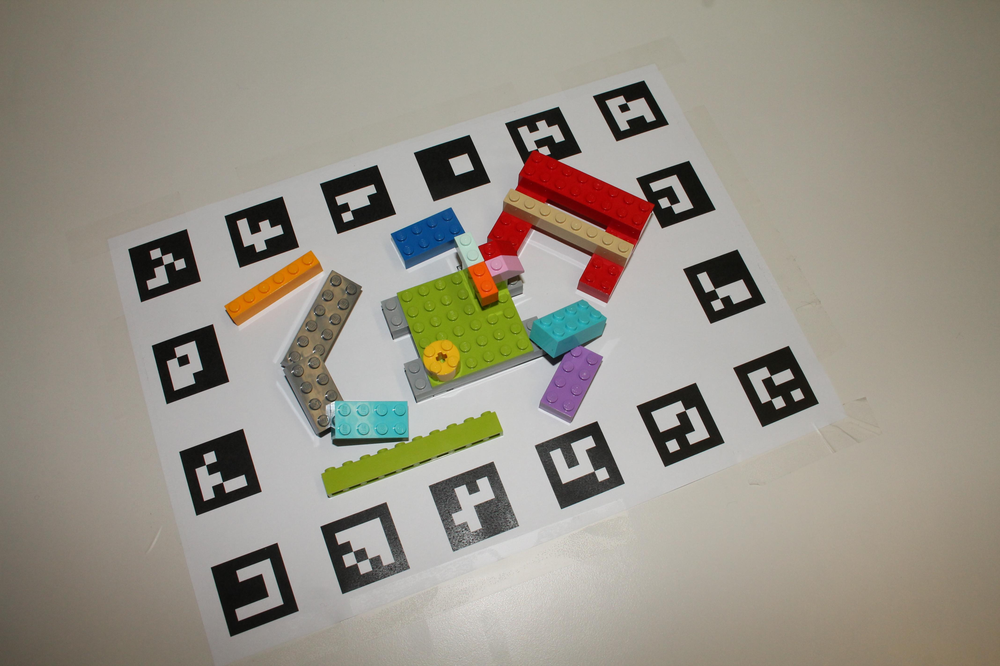
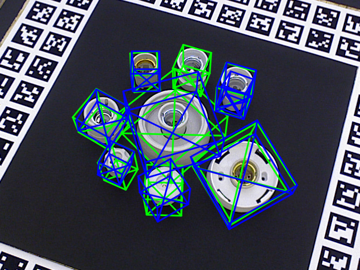
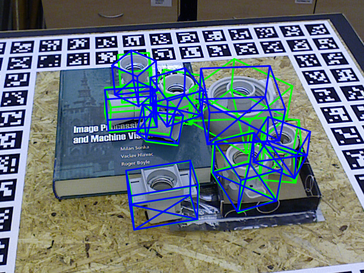
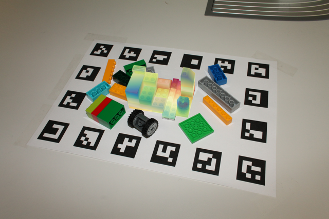
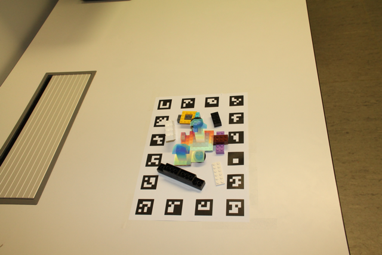

Abstract
6D pose estimation remains a key challenge in robotics and computer vision, particularly in industrial environments. The deployment of currently available data-driven methods is often limited by resource-intensive data pipelines, reliance on textured 3D models, and sensitivity to geometric deviations caused by damages or assembly defects. We present PIXIE, a zero-shot framework that estimates the 6D pose of an object from an RGB image using only an untextured 3D model. Synthetic depth and normal maps are rendered from sampled reference viewpoints and matched to the query image via a pretrained cross-modality feature matcher. Matched keypoints are back-projected to obtain 2D-3D correspondences for PnP-based pose estimation. Relying exclusively on geometry makes the method inherently robust to lighting and texture variation, while correspondence filtering handles geometric deviations between the model and physical object. We evaluate on widely-used public benchmarks, reporting state-of-the-art results on texture-less objects without object-specific training, and introduce a novel dataset with assembly defects, texture variations, and occlusion to demonstrate real-world applicability.
Method Overview
PIXIE estimates 6D pose from RGB using only an untextured target CAD model. The pipeline renders geometric reference views, matches them to the query image using pretrained cross-modality features, and recovers pose via 2D-3D correspondences and PnP.

Dataset
This repository hosts the PIXIE Assembly Dataset, a test-only benchmark for zero-shot evaluation of robust 6DoF pose estimation under assembly defects, color variation, and clutter.
The dataset is designed for evaluation-only usage and targets methods that must estimate object pose using only the fully assembled target model at inference time.




Qualitative Results
PIXIE remains robust across public benchmarks and the proposed assembly-defect dataset, including scenes with clutter, color variation, and geometric deviations from the nominal target model.



